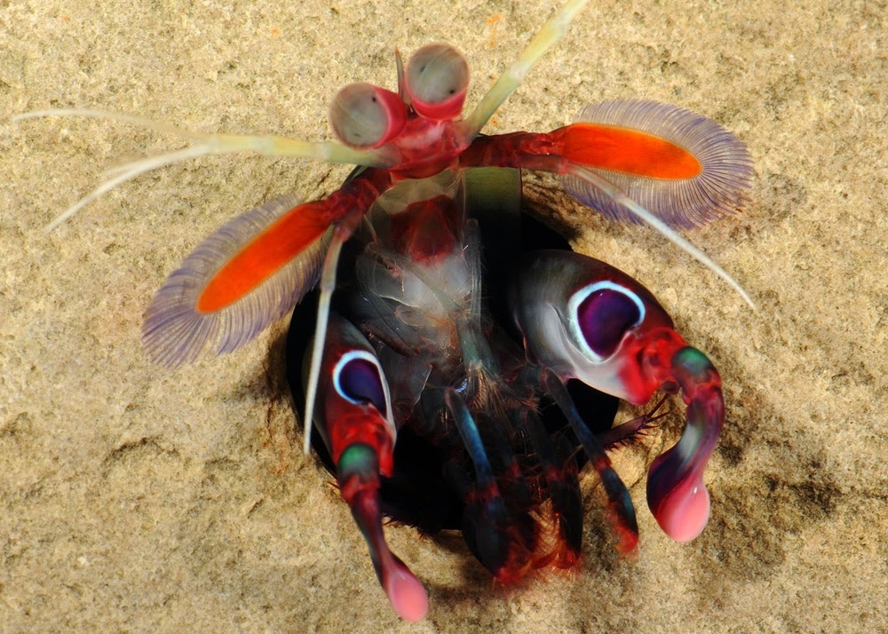
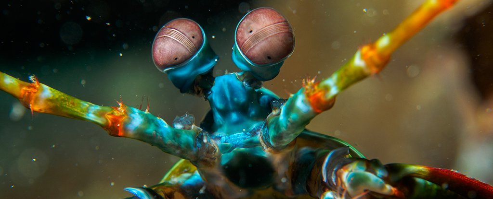

Fatos sobre o Stomatopoda.
O predador do Boxe
Stomatopoda Odontodactylus scyllarus, chamados popularmente de tamarutacas ou de lacraias-do-mar no Brasil, é uma ordem de crustáceos marinhos da subclasse Hoplocarida, que agrupa cerca de 400 espécies, caracterizadas principalmente pela morfologia da segunda pata torácica, que é modificada em apêndice subquelado, lembrando uma pata de louva-a-deus.

Classificação Ciêntifica
| Reino | Filo | Subfilo | Classe | Subclasse | Ordem |
|---|---|---|---|---|---|
| Animalia | Arthropoda | Crustacia | Malacostraca | Hoplocarida | Stomatopoda |
O que é?
Os estomatópodes são predadores ativos que caçam presas com o auxílio de um sentido de um sentido de visão muito apurado e capaz de interpretar polarização no espectro ultravioleta e infravermelho).

Onde vivem?
Ecologia. A maioria dos estomatópodes é encontrada nos ambientes marinhos tropicais ou subtropicais rasos. Quase todos eles vivem em tocas escavadas nos sedimentos moles ou nas rachaduras e fendas, entre os cascalhos, ou em outros nichos protegidos.
Sua visão afiada
Esses animais possuem o mais complexo sistema de visão de cores do mundo animal, pois enxergam 12 cores primárias, correspondentes aos 12 pigmentos distintos presentes em sua retina. Nossos olhos possuem três tipos desses receptores - que correspondem à luz azul, verde e vermelha -, que nos permitem perceber o espectro de cores que vemos.
